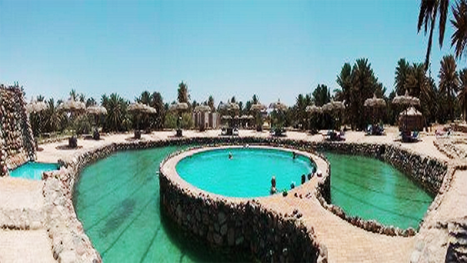
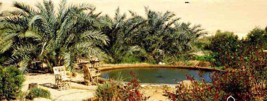

Hurghada
Combines medication with marine waters, coral reefs, sunlight and sand rich in
minerals
|
 |
Safaga
One of the most suitable places in the world to treat psoriasis because of the ultraviolet sunlight and its very salty water and black sand
|
 |
Sinai
besides its mild climate and sacred location Sinai has a lot of hot water springs such as Pharaoh's bath and Moses baths of therapeutic importance
|
 |
Bahariya Oasis
It is characterized by a dry climate and bright sun throughout the year. There are about 400 eyes for mineral and sulfurus water that is warm or cold and it's very important in the treatment of rheumatoid and skin diseases
|
 |
Siwa
mount dakror
Acquired by the people its significance importance in curing rheumatic diseases and joint pain and a general feeling of weakness.
kegar well
One of the most famous and most important hot wells in Siwa for treating several diseases such as psoriasis and digestive diseases and rheumatic diseases
|
 |
New Valley
the New Valley is blessed with a wonderful climate throughout the year, characterized by dry weather and free of humidity and bright sun and Fine sand, herbs that can be used in curing many diseases including:
Calotropis procera , roselle , mint, Ragweed
, gulges and Colocynth
|
 |
Kharga
Wells of Boulak
They are deep, self-flowing wells surrounded by greenery. Its waters contain several mineral elements of therapeutic interest, and spread nearby soft sand dunes that can be used for treatment(burial treatment)
Nasser wells:
For the treatment of rheumatic diseases, chronic pain, skin diseases, kidney stones accompanied by renal colic, and digestive disorders.
|
 |
Dakhla
has wells that are characterized by their hot water containing many therapeutically useful mineral elements
|
 |
Aswan
The people of Nubia treat others with herbs and silt or sand and there are many areas for treatment in Aswan like:
elephantine island:
where Sand baths are used for therapeutic purposes from March to October each year.
|
 |